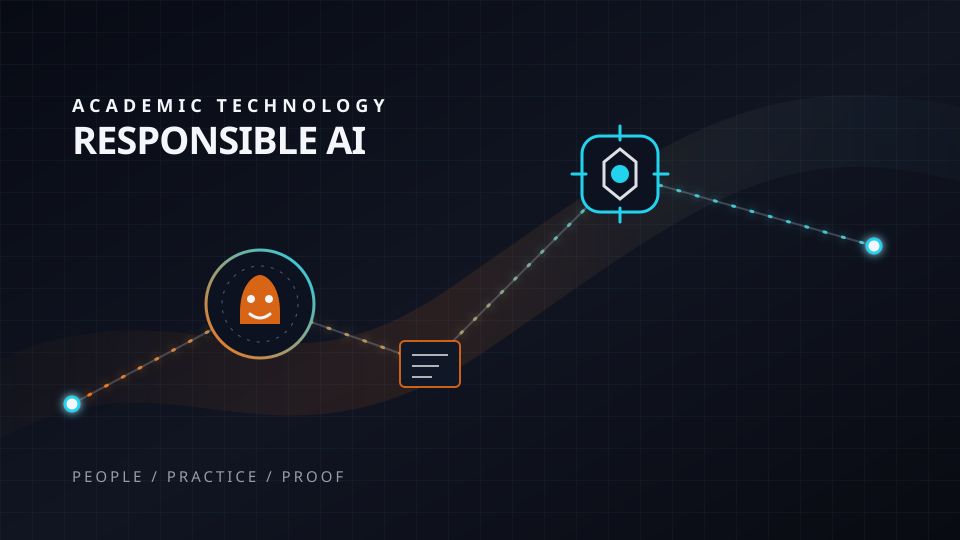

Academic technology & responsible AI
Privacy-conscious experiments and faculty-centered workflows that make emerging tools understandable, verifiable, accessible, and useful.

Professional learning & learning design
Courses, tools, and programs built through design, delivery, feedback, revision, and measurable outcomes.

Academic and creative leadership
Program leadership across people, curriculum, technology, story, and process, with clear systems that help teams finish strong work.

1X NEO initiative
Stakeholder storytelling that translated emerging technology into learning outcomes, cross-program relevance, and decision-ready documentation.

Life In the Gap
Documentary storytelling built around lived experience, careful listening, and public understanding.

Completed films
Selected directing, producing, editing, and post-production credits across documentary, broadcast, and streaming work.
What I know how to build, improve, and solve
- Listen carefully, make decisions transparent, and involve the people who will live with the work.
- Build trust by respecting expertise and giving people agency in change.
- Teach complex tools in ways that meet people at different levels of confidence.
- Turn a good idea into a structure, workflow, and shared purpose.
- Connect curriculum, professional practice, partnerships, and outcomes.
- Use feedback to revise programs so they remain useful and sustainable.
- Choose tools for their effect on teaching, learning, access, and creative work.
- Build privacy-conscious, accessible workflows with clear human responsibility.
- Make technology disappear into practice, so people can focus on the work.
- Find the human question inside a brief and build a clear narrative around it.
- Translate one strong idea across film, writing, web, presentations, and learning.
- Protect accuracy, dignity, clarity, and voice from concept through delivery.
Systems that protect the work
- Clear narrative, voice, and quality standards for every audience.
- Accessibility through captions, plain language, readable structure, and thoughtful design.
- Editorial and technical review that protects accuracy without flattening the story.
- Briefs, milestones, feedback loops, and clear decisions.
- Reusable templates that let teams spend more time on judgment and craft.
- Small experiments, honest assessment, and steady improvement.
About
I’m a creative academic leader, award-winning filmmaker, educator, and academic technology practitioner with more than a decade of higher education experience. My work connects professional media, faculty development, online learning, curriculum, governance, responsible AI, and program leadership. I move between the big picture and the next practical step, helping people understand what is changing, decide what matters, and build workflows they can use.
Contact
North Carolina | Available for remote and select on-site creative, learning, and technology leadership work
LinkedIn: linkedin.com/in/aaron-daniel-annas-6403a417
Completed films: FilmFreeway | IMDb
My work is grounded in real stories and shaped by a belief that how we tell them matters.